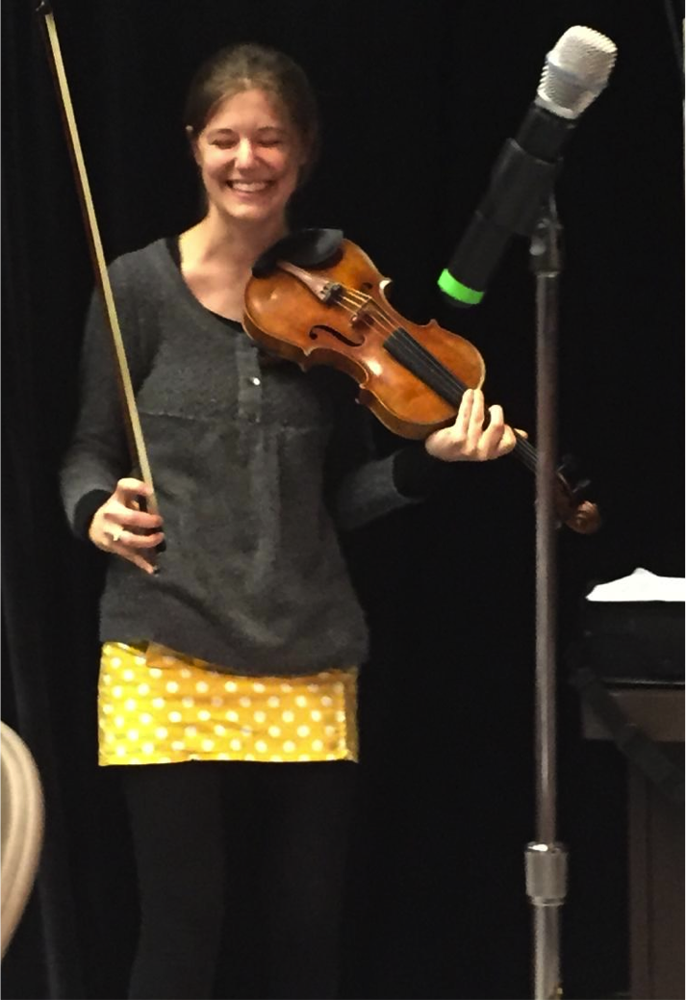

|

Photo by the inimitable Yichao, April 2016 By way of introduction: I am an incurable dromomaniac, sinophile, thespian, serial anorak, spelunker, and self-appointed cheese missionary. I am a hyper polyglot who longs to become a hyperpolyglot. I am plagued by a raging case of geographic and intellectual Wanderlust. I adore Assembly, terrible science puns, sheep, quirky orthographies, coelacanths, cardamom, equation typesetters, Renaissance polyphony, Sufi rock, smiling kitchen utensils, eggplants, polka dots, and the color yellow. I dislike senses of entitlement and having to scoop the first spoonful from a fresh jar of creamy peanut butter. I anthropomorphize everything. I identify very strongly as INFJ (if you set store by such things). I never learned to tie my shoes. Many have tried to rectify this educational oversight. All have failed. This website is an exercise in HTML, CSS, JavaScript, PHP, and narcissism. I'm also hoping that the collective pressure of The Entire Internet will compel me to complete various half-finished projects. At one point I flattered myself that the title of this website, "Chuffed to Bytes," was a brilliant and wildly original pun on the British expression "chuffed to bits" (meaning "delighted") and octal numerals. :D At any rate, I'm pretty chuffed that you're here - welcome!! |
| This website was designed and built by OMW using HTML, CSS, and JavaScript, © 2015-2016. She's pretty certain that copyright sign is meaningless in this context, but she's including it because it makes her feel more legit. Hosted by NearlyFreeSpeech.NET. |